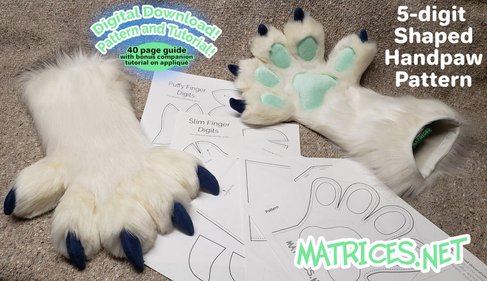
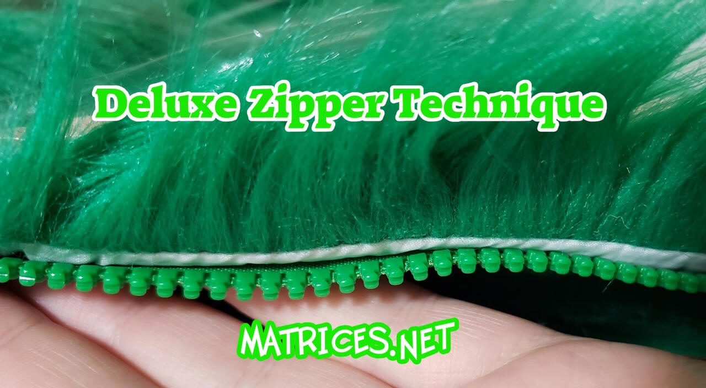
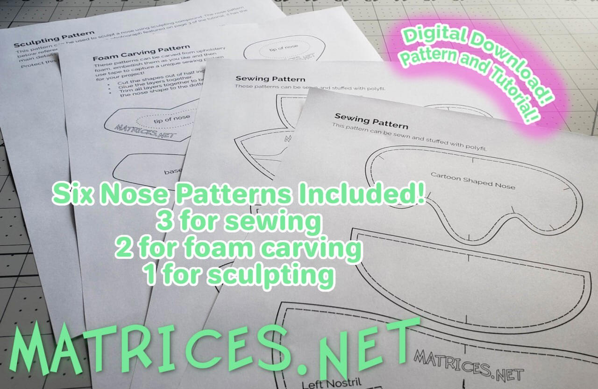
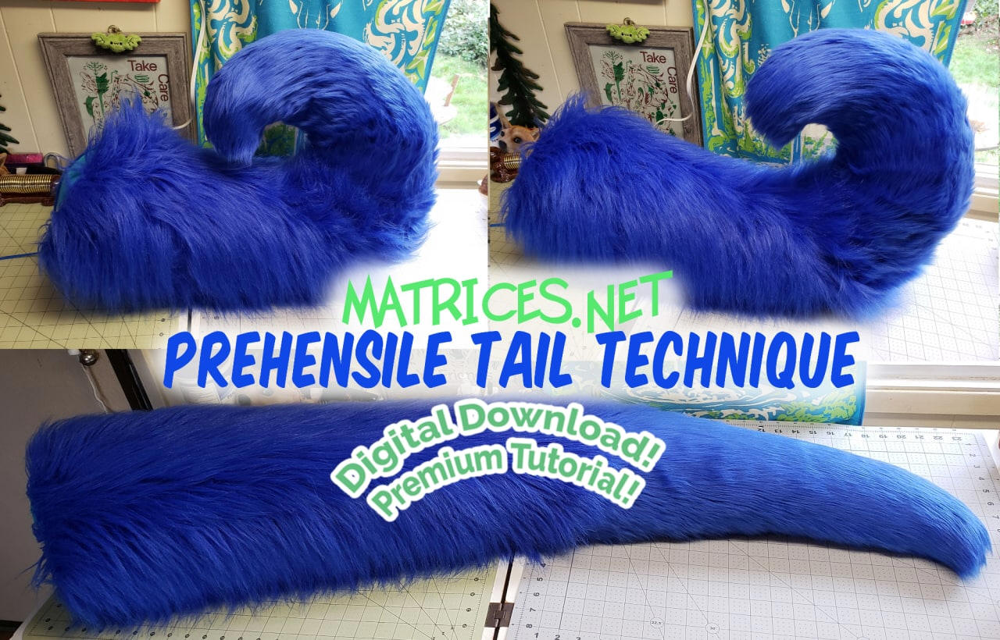
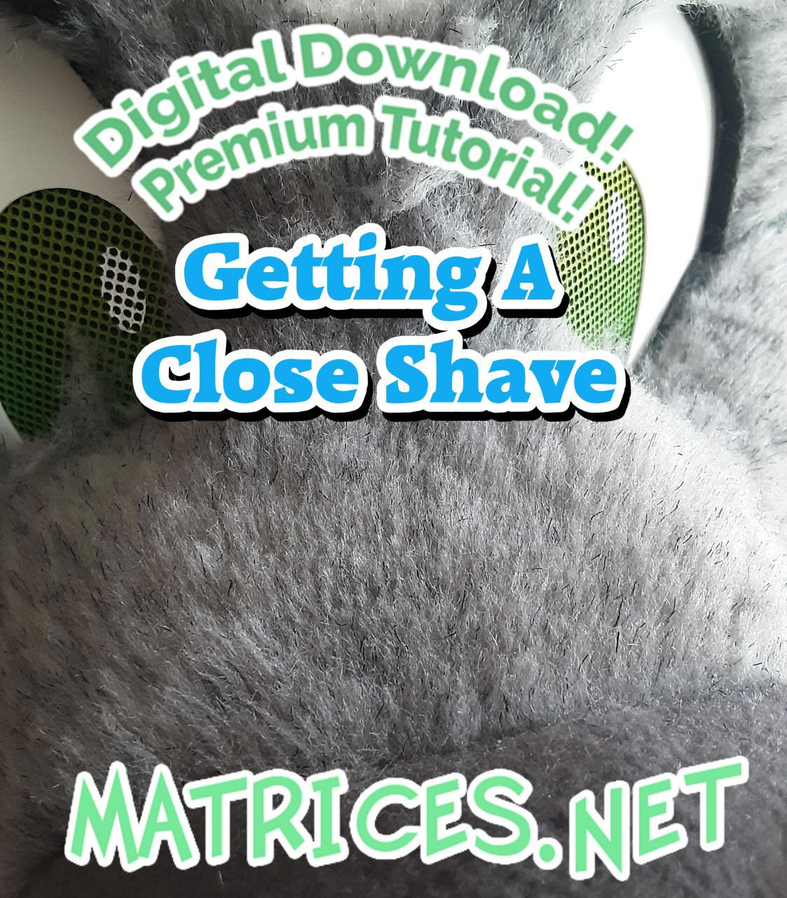
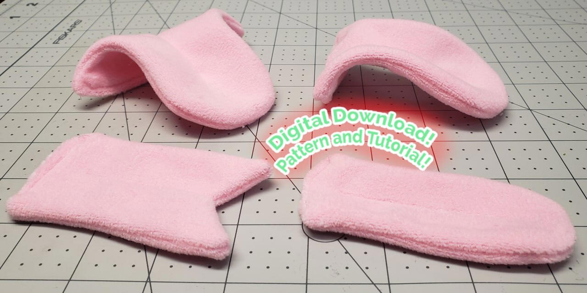
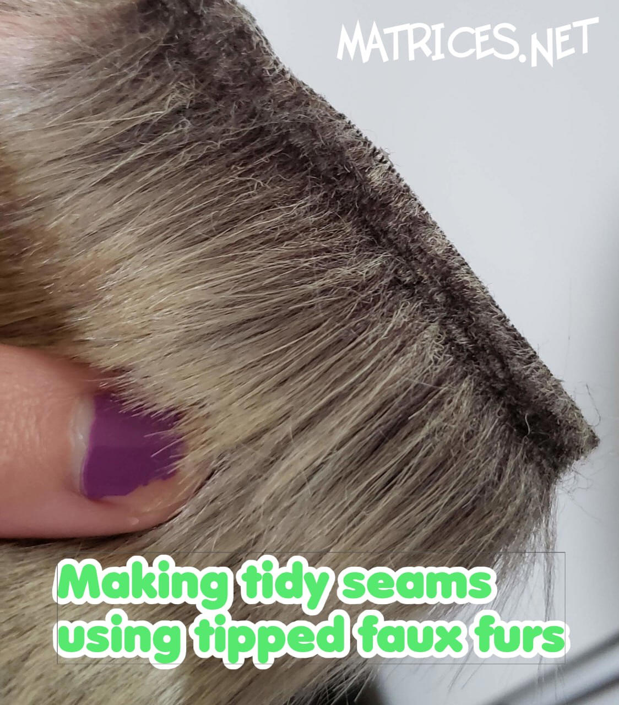
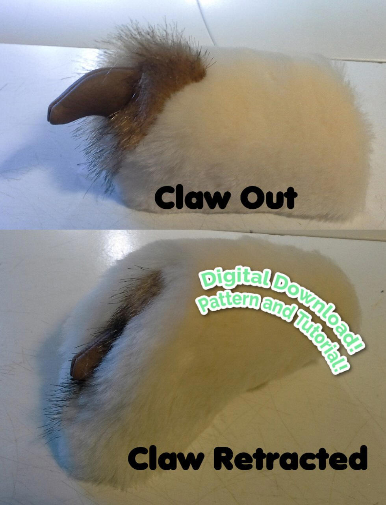

Matrices' Portfolio
Hello and
welcome! My name is Sara Howard, also known as Matrices. I am an artist,
tailor, illustrator, and crafter. I specialize in writing tutorial content and teaching people how to make
fursuits. The following is a portfolio of my work and examples
of my products that I make and sell. I have 5-star rated customer service as seen in
my Etsy reviews. Additionally you can find additional selected examples of my
finished work at my FurAffinity
Gallery
and Weasyl Gallery.
My Goals
- My primary content I would wish to promote for the event is my digital downloads of sewing patterns and premium tutorials, as well as my free tutorial content to help those wanting to get into making costumes.
- Helping other people learn how to create and enhance their own costumes, backed up by my site with over 80 tutorials and articles on the topic.
- Providing patterns and guides to help people learn how to create or enhance existing or future costumes.
- Tutoring to talk about items clients would like to make themselves with my help. (Tutoring is provided through a patreon tier)
What is special about my services
- Educational ebooks and patterns are provided in .pdf format with pictures and text and step by step guidance.
- A4 and letter size printable .pdf available for offline use.
- Free tutorials are provided online in both video and picture-and-text format.
- Offering unique and useful techniques, costume part patterns, and accessory patterns or guides that I have created and teach others how to make themselves.
- Teaching and empowering people new to the craft of fursuit making to be able to make the items themselves with my help from afar. Even if they have not sewn before.
Patterns Available Online at
- https://matrices.net/tutorials.htm
- https://matrices.etsy.com
- https://matrices.gumroad.com
- https://www.patreon.com/Matrices
The hope I have for participating in the event is to introduce new audiences to the fursuit tutorial content I have created. The primary focus will be on digital downloads of sewing patterns and premium tutorials, as well as sharing my free tutorial content to help those wanting to get into making costumes.

An example of a footpaw pattern I
have designed so others can make and sew footpaws with my tutorial.

And an example of the finished paws I teach crafters to make with the guide.
Patterns and Guides
To meet with my goals of helping other people learn to create, and to supplement the over 80 fursuit building tutorials available free on my website, I make available patterns and premium tutorials for sale that are of my design. These patterns are geared to people new to sewing, or want to get into making. They are sold in a .pdf format with instructions. For patterns a full-size printable copy of the pattern is available in a letter or a4 size. The tutorial text is written in English.
The following is a selection of patterns and tutorials I have made available. This select group of examples does not include all of the patterns I provide, there are lots more!

5-digit shaped handpaw tutorial. This has spent a long time in development and has been a major goal of mine to write and share the content in this guide. 40 pages & 90+ pictures! Its a big milestone for me to have accomplished such a detailed tutorial and share a cherished design of mine with all the crafters out there.

Deluxe Zipper Technique. One of my best selling technique guides with over 1,000 sales. Learn how to make beautifully finished and well-hidden zippers in faux fur! The technique also helps prevent fur getting stuck in the zipper so its easier to zip & unzip swiftly! Useful for creating hidden transitions for zip-on tails, zip-on footpaws, zip-on handpaws and other features. Utilize large-toothed zippers that can be hidden completely in the fur. This deluxe technique results in a nice durable zipper, fully hidden underneath the fur's pile with a durable flap that helps keep the fur out of the zipper track.

All about fursuit noses. An in-depth tutorial that includes 26 pages of detailed information on sewing noses, sculpting them, covering them in fabric, and also a few tips for installing purchased noses by other artists.

Prehensile Tail Technique. This teaches you how to make a puppetable tail that you can curl, wag, raise, lower, and move!! All done with a soft stuffed tail controlled by a cord.

Getting A
Close Shave. I am proud to present a comprehensive premium tutorial
on shaving techniques! At 22-pages long, its there to teach you the in's and
out's of shaving and trimming faux fur!

Sewn Tongues. 20-pages of step by step instruction on how to sew and install a flat or 3-dimensional sewn tongue, with 4 pattern designs included.

Making tidy seams using tipped or patterned faux furs. This technique guide teaches you how to treat the seam allowance when sewing tipped furs or fur fabrics that easily show a visible seam line. It explains what's happening and why its happening, with solutions to correct it before and after sewing!

Retractable Claw Technique. The purpose of this guide is to teach how to make the sewn claw and the retractable claw assembly. I have included finger digit patterns, claw patterns, (and a free simple handpaw pattern to start you out is included). Retractable claws are such a fun feature to consider for a project! It is a way that you can add a little bit more interactivity and performance aspect or better match a critter’s species.
In-person examples
I also sell my tutorials and patterns at in-person events, in addition to sales online. I have successfully held dealers tables at many in-person events, including Biggest Little Fur Con, Anthro Northwest, Further Confusion, VancouFur, and more. The following are some examples of how I package and sell my patterns for sale at in-person events . I make them available as a physical copy. Useful for those without home printers, wish to have an easy take-home project, or that prefer the included handmade booklet as a fun souviner.
It is the packaged full-size pattern with printed and bound booklet. I do all the printing and binding myself for these at this time. Due to the effort involved in personally handmaking the booklets, I only prepare enough physical copies for an event weekend and have made the decision to not sell the physical copies online, only the .pdfs. So these are special items.


All of my patterns come with thorough instructions, just like their digital counterparts..
Tutoring
Tutoring is one of the services I offer. I wish to empower those who want to learn how to make the items themselves even if they need a little bit of help here and there. So instead I provide tutoring opportunities through my Patreon tutoring tier for a monthly fee, and provide answers to targeted questions, draw up diagrams or work through problems together, and gain a bit of cheering on and personal assistance from me. This is paid monthly through patreon and done through the chat service Telegram. While many people do take fursuit and sewing commissions, I no longer provide that service and instead wish to spend my time encouraging and cheering on those who want to make, repair, or learn how to create items for themself!
Tutoring is provided in a chat-based environment where other participants can share pictures, ask questions, and also learn from past questions and experiences shared. With an easily searchable database of past questions, media gallery, shared works in progress, and early access to pattern designs as I work on them. The tutoring tier is the best patreon tier I offer. (others include basic support that goes to Matrices.net, getting access to .pdfs, and a support tier to get your name on my website as a supporter)
I hope you enjoyed taking a look at my portfolio. Be sure to take a moment look at the rest of my Matrices.net website as well! Thank you for your consideration for inclusion in your event!
I can be contacted at sara@matrices.net or matrices.net@gmail.com